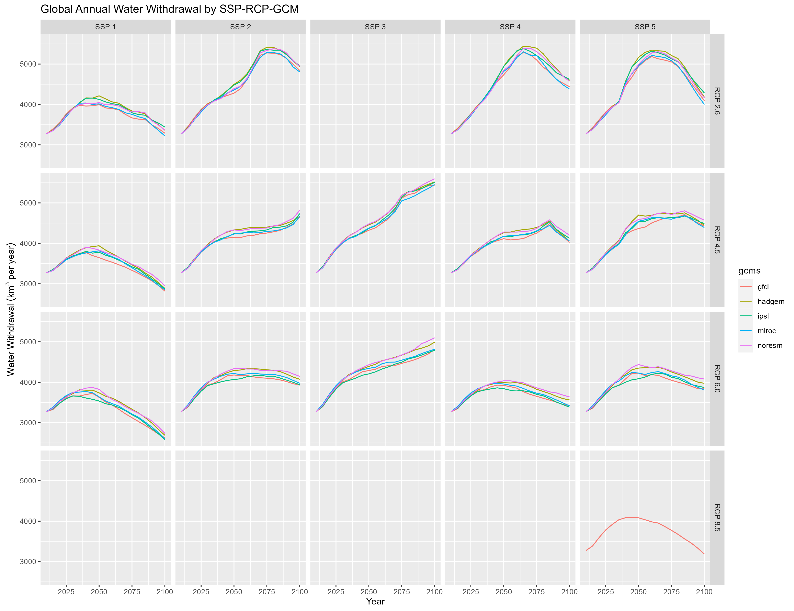

Source:
vignettes/vignette_metarepo.Rmd
vignette_metarepo.RmdCitation

Khan, Z., Thompson, I., Vernon, C., 2022. A global gridded monthly water withdrawal dataset for multiple sectors from 2015 to 2100 at 0.5° resolution under a range of socioeconomic and climate scenarios. (In progress) Journal_TBD, DOI: XXXX
Models Used
| Model | Version | Description | Language | Link |
|---|---|---|---|---|
| WRF |
|
Climate simulation model |
|
https://www.mmm.ucar.edu/weather-research-and-forecasting-model |
| GCAM | gcam v5.3 (branch gcam-usa-im3) | Global Change Analysis Model. Human-earth systems dynamic model. | C++/R | https://stash.pnnl.gov/projects/JGCRI/repos/gcam-core/browse?at=refs%2Fheads%2Fzk%2Ffeature%2Fgcam-usa-im3 |
| Xanthos | xanthos v2.4.1 | Water runoff emulator at 0.5 degree grids and monthly timesteps. | Python | https://github.com/JGCRI/xanthos |
| Helios | helios v1.0.0 | Gridded Heating and cooling degree day calculator at multiple spatial and temporal resolution. | R | Helios |
| GGCMI | ggcmi v1.0.0 | Emulators to model agricultural yield impacts in response to climate | ? | GGCMI |
| rpackageutils | rpackageutils v1.0.0 | Utility functions to process, aggregate and reformat data. | R | https://github.com/JGCRI/rpackageutils |
| im3components | im3components v1.0.0 | Functions to process data between different IM3 models. | R/Python | https://github.com/IMMM-SFA/im3components |
| gcamextractor | gcamextractor | Model to extract and process data from GCAM output databases. | R | https://github.com/JGCRI/gcamextractor |
Data
| Data | Source | Used.by | Location |
|---|---|---|---|
| WRF Outputs | WRF runs | Xanthos, Helios, GGCMI | (NERSC) /global/cfs/cdirs/m2702/gsharing |
| Xanthos Outputs | Xanthos runs (Workflow 1) | GCAM | zenodo link |
| Helios Outputs | Helios runs (Workflow 2) | GCAM | zenodo link |
| GGCMI Outputs | GGCMI runs (Workflow 3) | GCAM | zenodo link |
| Population US States | xxx | GCAM | zenodo link |
| Population Gridded | xxx | GCAM | zenodo link |
| GCAM Outputs | GCAM runs (Workflow 7) |
|
zenodo link |

Workflow 3 - Spatial Downscaling
Workflow 3 can be divided into three parts:
- A. Nonagricultural Sectors
- B. Livestock
- C. Irrigation

Total Annual Water Withdrawal